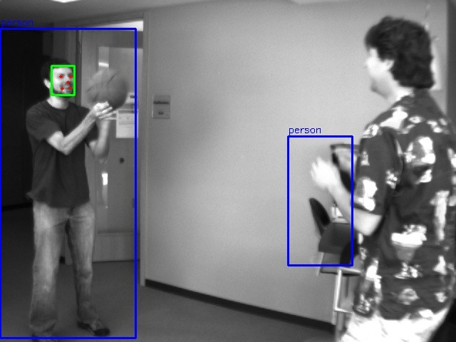

Computer Vision for Campus Video Analysis
A learning prototype combining YuNet face detection, HOG + SVM person detection, and spatial and temporal rules to explore face capture, suspected absence and patrol-presence scenarios.
The current prototype includes detection boxes, landmarks and face crops, plus a local interface for video upload, manual annotations and result export. Existing materials use public samples and simulated records; campus and night-time performance remain unvalidated.
Technical details and validation scope
- Python / OpenCV; YuNet produces face boxes, five facial landmarks and face crops.
- Region and timing rules support absence duration, recovery confirmation and patrol dwell-time checks.
- The local interface supports video upload, region configuration, frame review, manual event annotation, report export and experiment records.
- The demo displays existing outputs rather than rerunning inference in the browser. The HOG baseline has missed and partial detections; temporary tracking IDs do not verify identity.